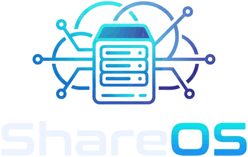
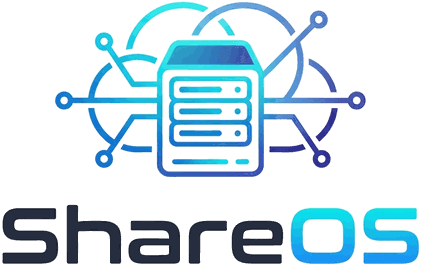

Storage
Setup wizard for one disk, a mirror (RAID 1), RAID 0 or JBOD. ext4, Btrfs, exFAT, NTFS. Take over Alt-F disks as they are, SMART health with self-tests, snapshots of shares.
ShareOS is a free, open source firmware for the D-Link ShareCenter boxes DNS-320L, DNS-320 and DNS-325. Current Linux, SMB 3, an app store, cloud sync and online updates – for hardware the vendor gave up on.


The D-Link firmware has known remote code execution holes (CVE-2024-3273) and D-Link advises to retire the boxes. Alt-F kept them alive for years, its last release is from 2017. ShareOS brings them back to a current, maintained state – without soldering and without a serial console.
The base system stays small. What only some boxes need – media server, torrents, VPN, Paperless – comes from the store.
Setup wizard for one disk, a mirror (RAID 1), RAID 0 or JBOD. ext4, Btrfs, exFAT, NTFS. Take over Alt-F disks as they are, SMART health with self-tests, snapshots of shares.
SMB 2/3 through ksmbd with the SoC's crypto engine, NFS v4. Rights per user and group, also as POSIX ACLs, storage limit per user, personal folders.
Web apps and native system apps with one click: Transmission, Syncthing, MiniDLNA, FFmpeg, OpenVPN, Tailscale, autobrr, Zabbix agent and more. Apps get only the permissions they declare.
rclone sync with Nextcloud/WebDAV, S3, SFTP, Google Drive and more – for the box and per user. Paperless-ngx inbox folders, e.g. for a scanner, as a module.
HTTPS with own CA or Let's Encrypt, Dynamic DNS, mDNS name, Tailscale without port forwarding (also behind DS-Lite), VPN client and server, DNS filter for the whole network with AdGuard Home.
Current kernel and libraries, kernel hardening, no known password on a new box (claimed with the USB button), settings backup with optional AES-256.
Online updates from GitHub Releases, checked every 6 hours, with progress. Or upload the update file – no internet needed.
Messages for RAID, SMART, temperature and updates by e-mail, ntfy, Gotify, webhook or Telegram. Zabbix agent with a ready template.
Fan curve, LEDs, buttons, power schedule with wake-up alarm, browser terminal, light/dark look with accent colours, 10 languages.


The main device, tested on hardware with every release. 256 MB RAM.
DNS-320L-rev-AxThe white DNS-320L – same board, uses the DNS-320L files.
DNS-320L-rev-AxBoots from flash, buttons, LEDs, fan and updates work on rev A1. 256 MB RAM.
DNS-325-rev-AxBuilt with every release, not tested on hardware yet. 128 MB RAM.
DNS-320-rev-Ax · DNS-320-rev-BxThe DNS-327L (Armada 370) needs its own kernel and flash layout and a tester.
A reduced system for the 64 MB Orion boxes – the hardware test is running.
Have one of the boxes marked “testers wanted”? See Devices & testers – no soldering, no serial console needed.
ShareOS-<version>-<model>.bin and .sysupgrade.tar..bin of your current firmware (e.g. Alt-F) for the way back..sysupgrade.tar to a USB stick (FAT32, exFAT or ext4) and plug it in. Without a stick the box downloads it from GitHub..bin on the firmware page of Alt-F or of the D-Link interface. Do not cut the power.http://<box-IP>/, press the USB button on the front to claim the box, choose the root password and follow the setup wizard. Your disks keep their data.System → Firmware → Install firmware file → the Alt-F .bin. ShareOS checks the file and reads it back after writing.
Details, troubleshooting and the way back to the D-Link firmware: Switching guide · Testing.
All versions are test versions (beta) for test devices. System apps, all checksums and older releases: GitHub Releases · full history in the changelog.
Web apps from ShareOS-Apps – files and office, media, network, security, development and everyday life – and native system apps built with the firmware. Everyone can submit an app.
Loading the app catalog …
| D-Link firmware | Alt-F | ShareOS | |
|---|---|---|---|
| Last release | 1.11, end of life | 1.0 (2017) | 0.3.0 betas (2026), updated continuously |
| Linux kernel | 2.6.31 | 4.4 / 4.14 (trunk) | 6.18 LTS |
| Toolchain | uClibc | buildroot 2009.08 fork, GCC 7.4 | buildroot 2026.08, GCC 15.3, musl |
| SMB | Samba 3.x, SMB1 | Samba 3.6 (SMB1/2) | ksmbd: SMB 2.1/3 |
| Web interface | ShareCenter UI | shell CGIs | uhttpd + ubus/rpcd, light/dark, per user |
| Updates | manual .bin | manual .bin | online from GitHub, verified |
| Extensions | add-ons (discontinued) | ipkg packages | app store: web and system apps |
| Security | unpatched RCE (CVE-2024-3273) | old kernel and Samba | current kernel and libraries |
The full table with sources is in the README.
Apart from importing Alt-F, ShareOS was developed by Claude (Anthropic): architecture, all code, builds, tests and docs. Jan started the project, made the decisions and tested every release on the real hardware. The timeline documents with timestamps and screenshots how far that goes.
Read the timeline